2022
This book is a collection of strangers’ lines on a blank sheet of paper.
“Draw a line from one side of the page to the other”, this is the
instruction 100 bypassers were given along with the reminder to freely
express themselves on the surface. Where one line ends, another
begins—they are individual expressions and a single participatory work.
To complete the book, the owner of each copy is asked to draw their own
line on the cover, thus becoming part of the project. The book has a
soundtrack generated by associating the lines with the frequency of the
sound. By scrolling through the pages and listening to the corresponding
sound, the reader takes a journey into people’s emotions.
Field
Research
Editorial
Web
Collaborators
Davide Agostinelli
Irene Benecchi
Bianca Buratti
Alice Dezio
Marta Gaggi
Giulia Gnessi
Made at
Politecnico di Milano
Exhibited at
Cavallerizza Reale 2022
Dock Dora 2022
Torino Print Club
ELO 2022
Links
enricoisidori.com/draw.html
Features
Nuovi linguaggi del visual design in Italia, 2022
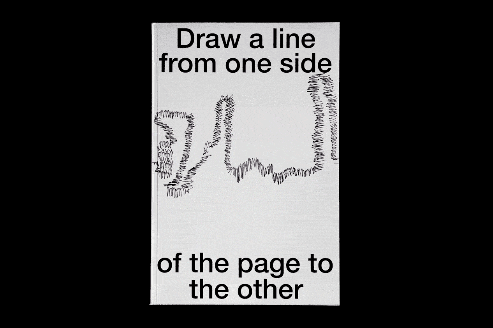
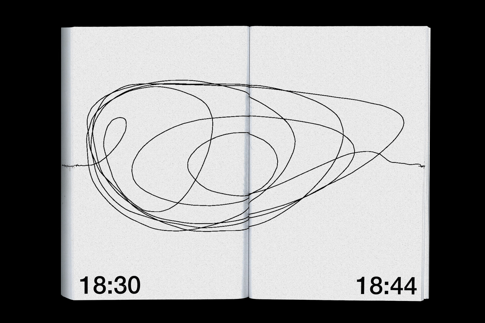
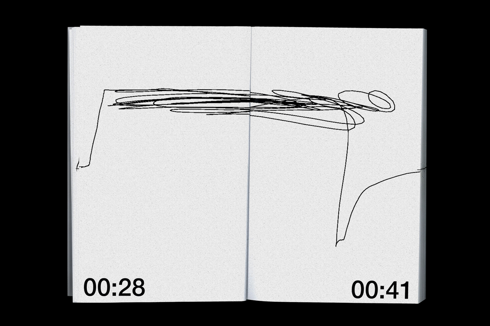
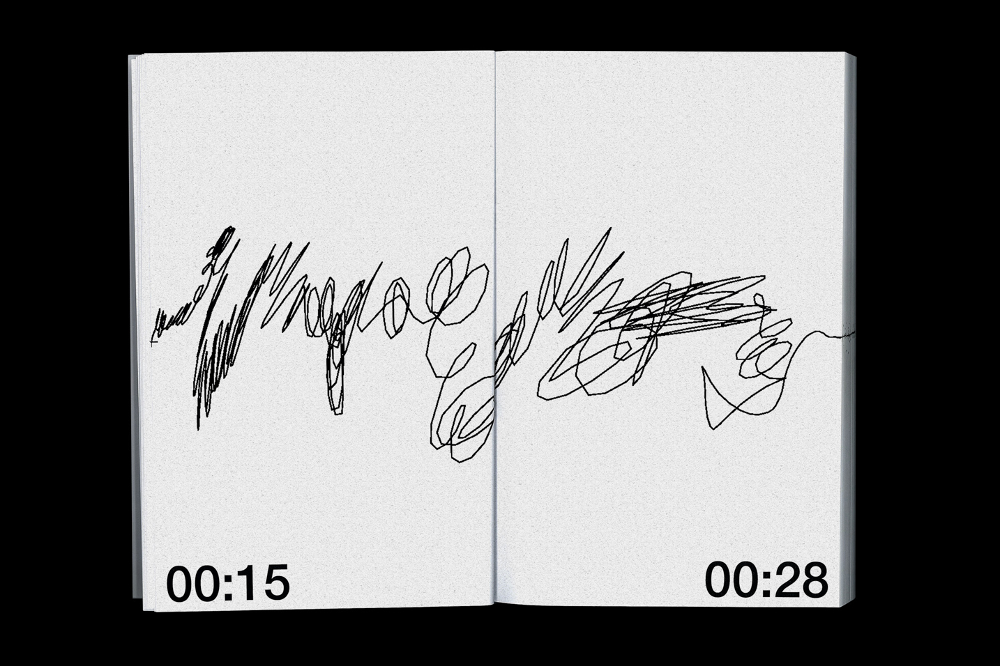
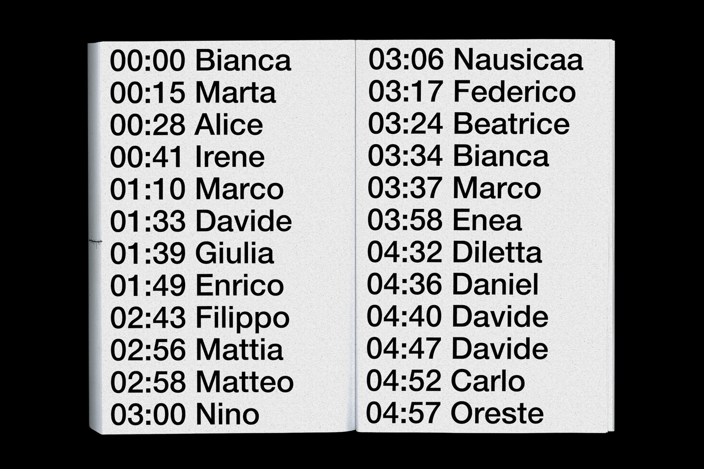
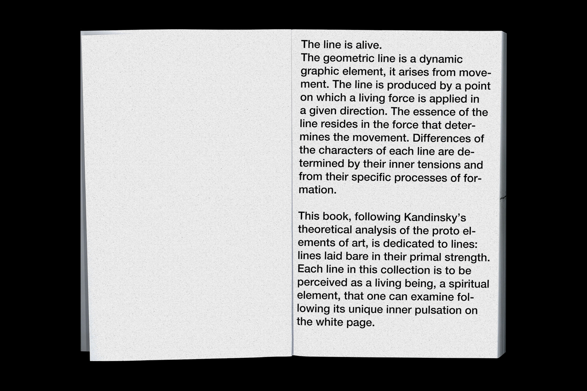
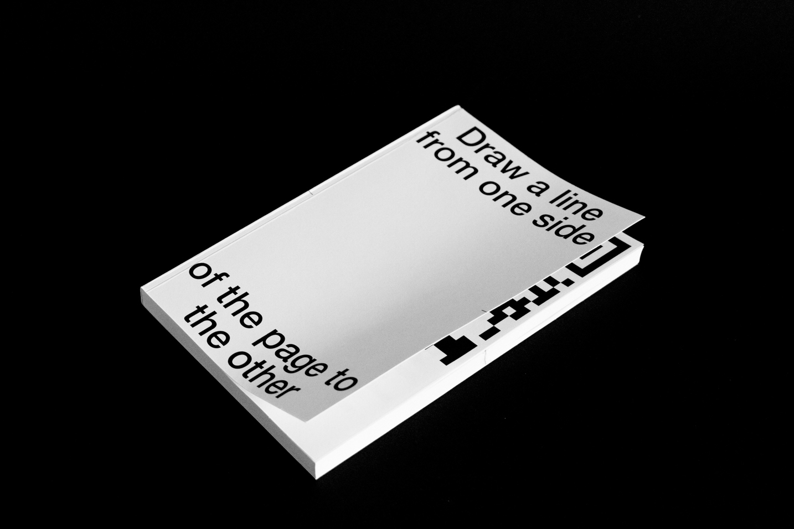
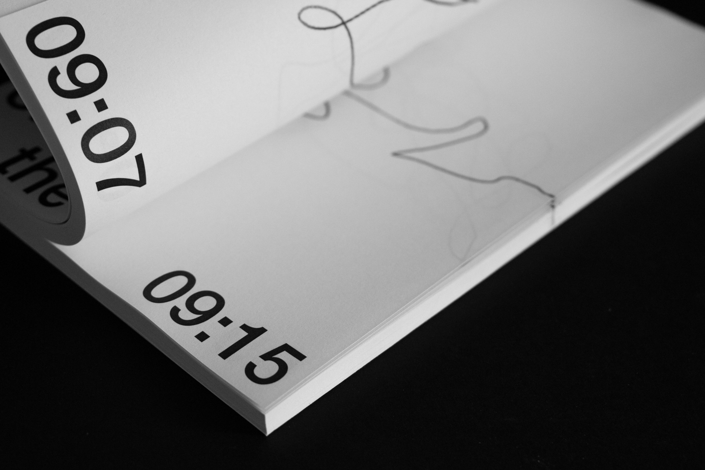
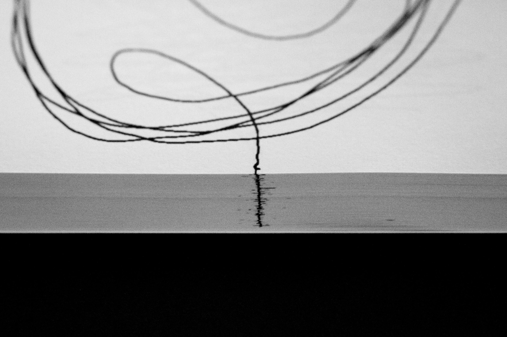
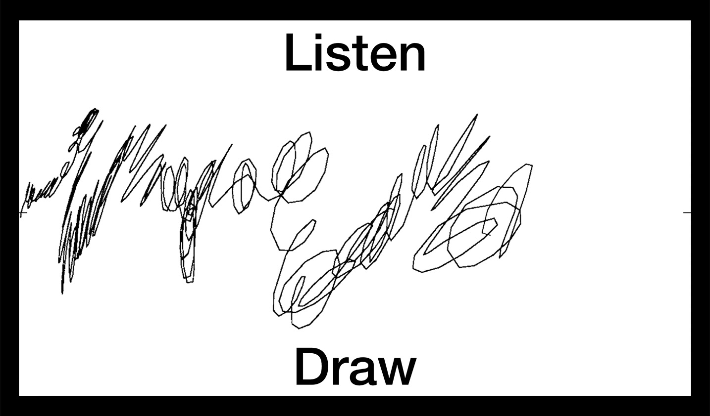
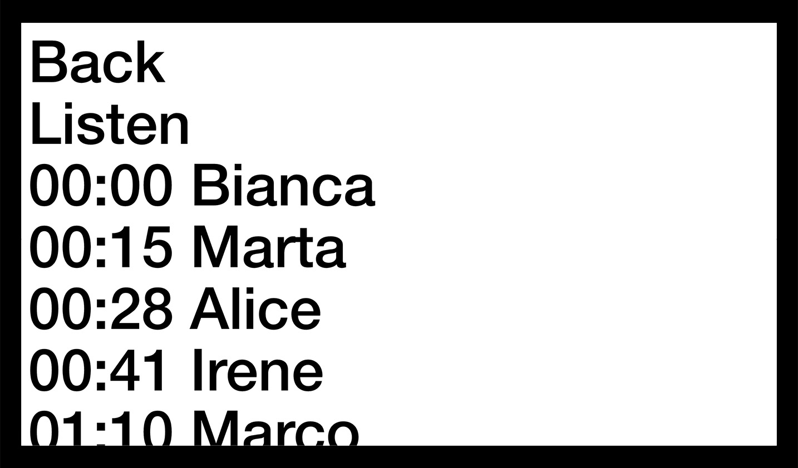
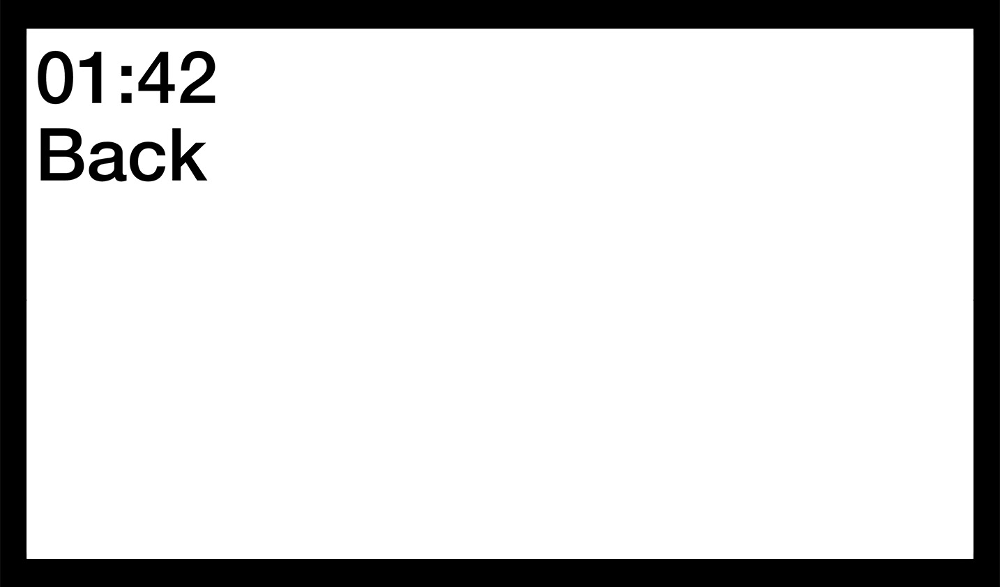
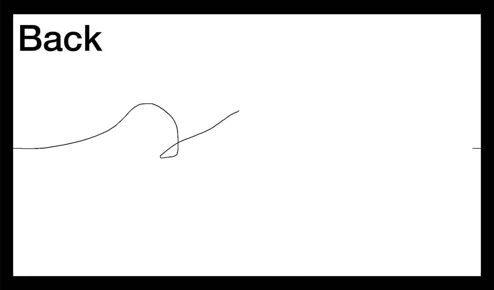